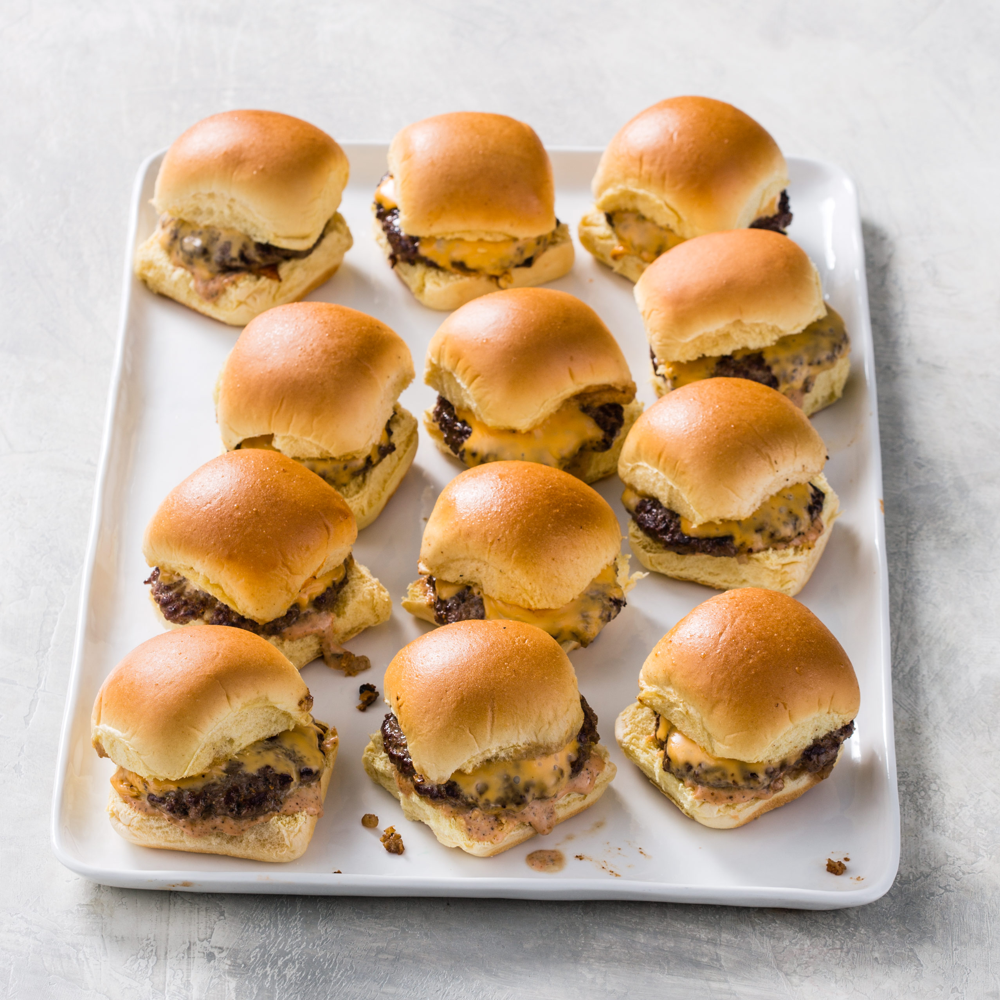

Air Fryer Sliders

Sliders: For when actual burgers are just too big! Prove that good things do come in small packages with this recipe.
Ingredients:
- Hawaiian rolls
- Hamburger meat (or even meatballs!)
- Cheese, tomatoes, lettuce, or any other toppings (optional)
Steps:
- Preheat air fryer to 400 degrees. Set the air fryer timer to 8-10 minutes.
- Form hamburger meat (or flatten meatballs) into patty shapes small enough for the Hawaiian rolls.
- Once ready, load onto tray or into basket and insert.
- Flip about halfway through.
- After letting them cool for about two minutes, place onto Hawaiian rolls and top with any (and all) toppings.
- Share and enjoy! (Sharing optional.)